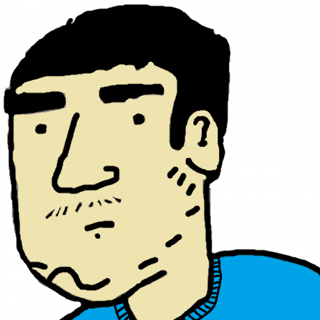

Hi there!
I'm a Software Engineer with a wide depth of knowledge, years of experience and an open-source fanatic.
Knowledge
HTML, CSS, JavaScript, C#, PHP, C++, C, SQL, Git, MVC, APIs (REST) and more.
Soft skillsAgile methodologies, teamwork, good communication and good problem solving.
Projects
HuwInterpreter is an interpreter built in C++ for a custom language I developed named HuwCode. The project was built out of self-interest and understanding on how interpreters work and written. The language supports 70 built in functions, custom user defined functions, scopes (each function has a scope), variables with types of double (number), string (text) and associated array.
HuwCode documentation: Easy guide for existing programmers on how to get familiar with the language and system Link to documentation here.
A slightly slimmed down version of HuwInterpreter but runs on the web. HuwInterpreter is a desktop app but has been converted to the web by the use of Emscripten, a next generation tool.
This project shows feature/API support of Adobe Flash alternatives such as Shumway, Lightspark and Gnash. This tool was developed so I could visualise and gamify the development of missing APIs while developing Lightspark further.
https://github.com/huwdp/pathfinding_benchmark - Benchmark and visualiser for various pathfinding algorithms.
https://github.com/huwdp/pathfinding - Simple C++ pathfinding project that includes A* and Dijsktra algorithms.
HuwOpenGL3DExperiment - Experimental sandbox project for learning 3D graphics, OpenGL API, pathfinding, collision, physics and more. (in progress)
as3-tests - Test cases for reverse engineering Adobe Flash ActionScript 3 APIs (features) for Lightspark.
PlaneAI - AI project designed to detect and label pictures of aircraft. (in slow progress)
HCalc - HCalc is an Reverse Polish notation calculator written in C++ and Qt. This is an earlier attempt to create an interpreter for evaluating math expressions.
galleryviewerassignment1 - Gallery Viewer and admin panel written in PHP, MySQL and Symphony framework. (Archived)
ASPProject1 - Simple Online shop with products, a basket and an admin backend. (Archived)
CSharpLoginWebSystem - A sample C# .NET Core MVC project with login functionality. This project integrates with EntityFramework and identity, and has clean easy to read code. (Archived)
Contributions
Lightspark is an open source implementation of Adobe Flash. I have implemented numerous missing APIs, the effort has allowed some flash files such as games to run within Lightspark.
Mesa Matrix - Added link to Nouveau feature matrix.
I donate monthly to Ruffle, SerenityOS, and Renerebe, a YouTuber.